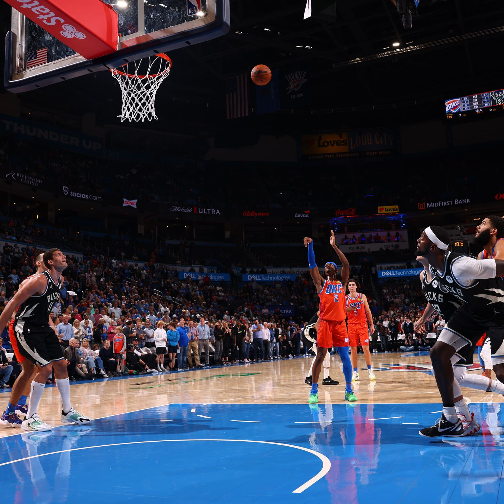

The Free Throw Factor: Is it the Key to Success on the Floor?
Free throw percentage (FT%) is often considered a fundamental metric for evaluating a player's shooting ability. Since free throws are uncontested and rely solely on a player’s mechanics, concentration, and muscle…